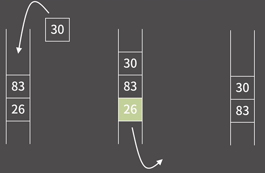
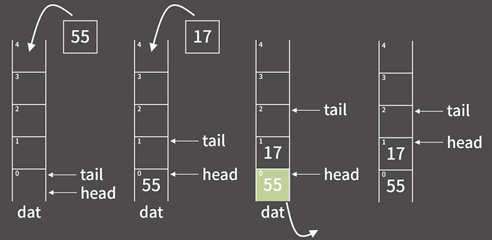

:큐는 먼저 들어온 것이 먼저 나가는 구조이다. (FIFO)

- 원소의 추가가 O(1)
- 원소의 제거가 O(1)
- 제일 앞/뒤의 원소 확인이 O(1)
- 제일 앞/뒤가 아닌 나머지 원소들의 확인/변경이 원칙적으로 불가
- 큐에서는 추가되는 곳을 rear(뒤쪽), 제거되는 곳을 front(앞쪽)이라 한다.

- 위처럼 배열기반으로 구현하면 push할땐 tail이 증가하고, pop할때는 head가 증가한다.
- 쓸모없는 공간이 너무 많이 생김
- 원형 큐를 만들면 해결이 되긴 하지만, 코테에서는 굳이 필요 없음